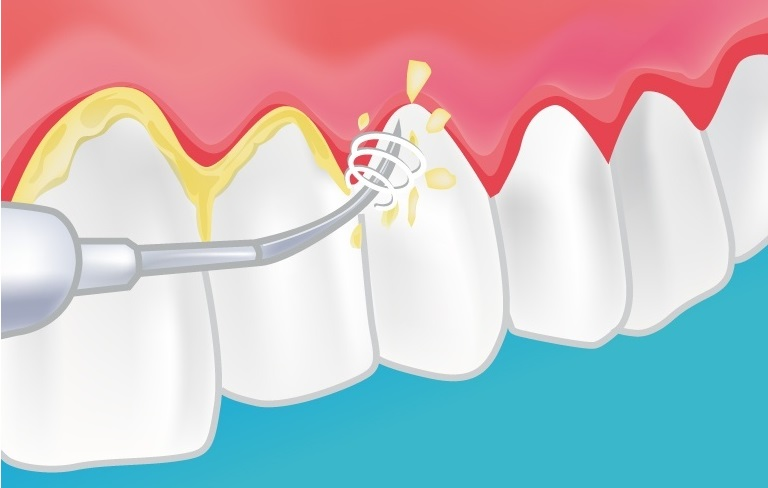

La periodoncia es una rama de la especialidad médico-quirúrgica odontológica que estudia la prevención , diagnóstico y tratamiento de las enfermedades y condiciones que afectan los tejidos que dan soporte a los órganos dentarios (encía, ligamento periodontal, cemento radicular y hueso alveolar) y a los substitutos implantados, para el mantenimiento de la salud, función y estética de los dientes y sus tejidos adyacentes.
Las principales enfermedades periodontales que afectan a una dentición son la periodontitis y gingivitis. Debe haber una buena técnica de cepillado para ese tipo de pacientes.
Para diagnosticar correctamente dichas enfermedades se necesitan radiografías panorámicas La enfermedad periodontal se manifiesta como una gingivitis (inflamación y sangrado de la encía sin afectar el hueso) o periodontitis, donde ocurre la destrucción del hueso que soporta el diente. Si no es tratado a tiempo puede ocasionar la pérdida de los dientes.
Los tipos de enfermedades son:
En algunos casos, el dentista limpia el sarro que se ha colado por debajo de la encía, realizando curetaje o raspado radicular (limpieza manual por debajo de la encía para eliminar el sarro interno) y frenando así el proceso de destrucción de tejidos.

En casos de mayor destrucción de hueso el dentista puede diagnosticar tratamientos más severos, con cirugías periodontales y, en ocasiones, realizar injertos de hueso artificial.
Si, finalmente, se pierde algún diente a causa de la enfermedad periodontal, es posible sustituir los dientes naturales por dientes artificiales con prótesis dental. Actualmente las prótesis pueden ser sujetas gracias a los implantes dentales, de forma fija o removible.
¿Como evitar la enfermedad periodontal?
Por otra parte, existen tratamiento para revertir la retracción de las encias, provocado por la periodontitis o similar.
El injerto de encía es una técnica quirúrgica mínimamente invasiva. Consiste en la toma de tejido blando generalmente del paladar del propio paciente que, posteriormente, el cirujano colocará en la zona en la que el diente o implante se ha quedado sin protección.
El injerto de encía es una técnica mínimamente invasiva que se realiza bajo anestesia local , de manera que su efecto mitigue cualquier molestia que el paciente pudiera sufrir durante el tratamiento. Por lo tanto, podemos afirmar que el injerto de encía, como tal, no duele.